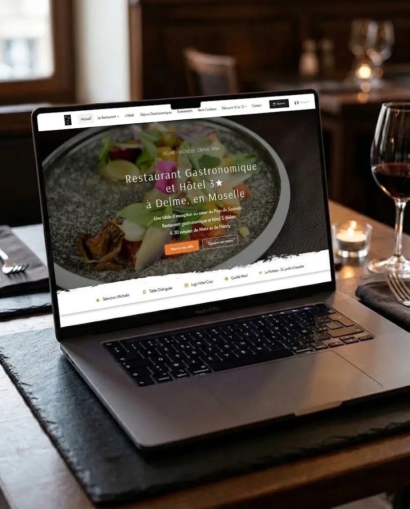

Si vous tenez une boulangerie à Mâcon, un salon de coiffure à Bourg-en-Bresse ou un garage à Roanne, la question du prix d'un site internet finit toujours par se poser. Et la réponse que vous trouvez en ligne est décourageante : « ça dépend ». Un devis à 800 €, un autre à 6 000 € pour ce qui ressemble au même site. Un beau-frère qui vous dit qu'il vous fait ça pour rien. Un vendeur qui vous parle de 29 € par mois. Vous ne savez plus qui écouter.
On installe des caisses, on gère l'informatique et on crée des sites pour des commerçants et des PME des quatre départements. On voit passer des devis web tous les mois. Certains sont honnêtes, d'autres racontent n'importe quoi, et beaucoup de commerçants signent sans comprendre ce qu'il y a derrière le chiffre.
Alors voici les vrais ordres de grandeur pour 2026, en France, sans langue de bois. Pas de « à partir de » alléchant suivi d'une facture qui triple. Des fourchettes réelles, ce qu'elles incluent, et ce qui doit vous alerter dans un sens comme dans l'autre.
Le prix d'un site internet professionnel en 2026 va, en France, d'environ 500 € pour une vitrine simple montée sur abonnement à plusieurs milliers d'euros pour un site sur mesure ou une boutique en ligne. Pour un artisan ou un commerçant local, une vitrine bien faite se situe le plus souvent entre 1 500 et 8 000 € selon le prestataire, à quoi s'ajoutent 500 à 1 800 € par an de frais récurrents (nom de domaine, hébergement, maintenance).
D'abord, de quel type de site on parle
Avant de parler prix, il faut trancher une chose : voulez-vous une vitrine ou une boutique en ligne ? Ce choix fait varier la facture du simple au décuple.
Un site vitrine présente votre activité. Vos services, vos horaires, vos photos, un formulaire de contact, votre position sur une carte. Le client vous trouve, comprend ce que vous faites, vous appelle ou passe. Pour un artisan, un restaurateur, un commerce de proximité, c'est presque toujours ce dont vous avez besoin.
Un site e-commerce vend en ligne. Panier, paiement, gestion des stocks, expédition. C'est un autre métier, un autre budget, et honnêtement, beaucoup de commerçants n'en ont pas besoin. Un boulanger qui veut être visible sur Google n'a pas à se payer une boutique en ligne à 15 000 €.
On traite les deux cas séparément, parce que mélanger les deux, c'est comme ça qu'on se retrouve à payer un site e-commerce quand une vitrine aurait suffi.
Combien coûte un site vitrine en 2026
C'est le cas le plus courant pour un commerçant ou un artisan local. Voici les fourchettes réelles selon qui fabrique le site.
La solution en ligne par abonnement
Vous construisez le site vous-même à partir d'un modèle, et vous payez un abonnement mensuel qui inclut l'hébergement et l'entretien. Comptez de 19 à 70 € HT par mois. Si vous partez d'une page blanche et que vous bricolez tout, on trouve des formules à partir de 300 € l'année.
Sur le papier, c'est imbattable. Dans les faits, il y a un piège qu'on détaille plus bas : ce site ne vous appartient pas vraiment, et le jour où vous voulez le faire évoluer ou le récupérer, vous êtes coincé.
Le freelance
Un développeur ou intégrateur indépendant vous fait un site sur mesure. Pour une vitrine standard, comptez 1 500 à 4 000 €. Le tarif journalier d'un freelance tourne autour de 300 à 600 €, et un site vitrine représente quelques jours de travail. La moyenne constatée se situe autour de 2 500 €.
C'est souvent le meilleur rapport qualité-prix pour un artisan qui veut un vrai site à lui, sans payer une structure d'agence. À condition de tomber sur quelqu'un de sérieux et disponible dans la durée, ce qui n'est pas toujours garanti quand la personne travaille seule.
L'agence web
Une agence vous livre un site soigné avec, en général, une stratégie de contenu, du référencement, une formation pour prendre la main. Comptez 3 000 à 10 000 € pour une vitrine bien faite. Certaines montent à 5 000, 15 000 € et au-delà pour du vrai sur mesure.
C'est plus cher parce qu'il y a plus de monde et plus de méthode derrière. Pour un commerçant local, c'est parfois surdimensionné. Pour une PME avec des ambitions, ça se justifie.
Le tableau des fourchettes vitrine
Combien coûte une boutique en ligne
Si vous vendez vraiment en ligne, c'est un autre monde. Le prix dépend surtout de la technologie choisie et du nombre de produits.
Pour un artisan avec un petit catalogue (moins de 50 références), comptez 4 500 à 8 000 €. Ensuite, tout dépend de l'outil :
- WooCommerce (la boutique greffée sur WordPress) : autour de 4 000 € en médiane. Un quart des projets passent sous 2 000 €.
- PrestaShop : médiane autour de 11 000 €, avec une fourchette de 5 000 à 30 000 €.
- Shopify : médiane autour de 25 000 €, mais la fourchette est très large, de 8 500 à 100 000 € selon les personnalisations et les intégrations.
- Le sur mesure sans logiciel du commerce : médiane autour de 45 000 €.
En clair, une TPE type boucle un projet e-commerce autour de 6 000 €. Une PME qui veut connecter sa boutique à son logiciel de gestion (un ERP) monte plutôt à 12 000, 22 000 €.
Si un prestataire vous annonce un e-commerce clé en main à 1 500 €, méfiez-vous : soit c'est un modèle standard sans accompagnement, soit il y a des coûts cachés qui vont tomber ensuite.
Ce que les devis oublient : les coûts qui reviennent chaque année
Voilà le piège le plus courant. Un devis vous annonce un prix de création, vous signez, et vous découvrez ensuite qu'il faut payer tous les ans pour que le site reste en vie. Ces coûts récurrents doivent figurer noir sur blanc dans votre devis. S'ils n'y sont pas, posez la question avant de signer.
- Le nom de domaine (votre adresse en .fr) : 5 à 15 € par an. C'est indolore, mais c'est vous qui devez en être propriétaire, pas votre prestataire.
- L'hébergement (le serveur qui fait tourner le site) : de 3 à 15 € par mois en mutualisé, 15 à 50 € pour un serveur privé (VPS), à partir de 100 € par mois pour du dédié.
- La maintenance : de 50 à 500 € HT par mois selon ce qu'elle couvre. Sur l'année, ça va de quelques dizaines d'euros pour le minimum à plusieurs milliers pour un suivi complet.
Au total, un petit site vitrine géré sérieusement coûte 500 à 1 000 € HT par an à faire vivre. Une vitrine active ou un site de PME, plutôt 900 à 1 800 € HT par an. Ce budget annuel n'est pas une option : un site qu'on ne met jamais à jour se fait pirater, casse, ou finit par afficher des horaires faux qui font fuir le client.
Pourquoi deux devis peuvent aller du simple au triple
Deux artisans du même métier, deux devis, un écart de 4 000 €. Ce n'est pas forcément que l'un arnaque l'autre. Le prix d'un site dépend de facteurs concrets. En voici les principaux.
Le nombre de pages et leur complexité. Cinq pages simples n'ont rien à voir avec vingt pages aux gabarits variés. Chaque page se conçoit, se remplit, se teste.
Les fonctionnalités. Un formulaire de contact basique ne coûte presque rien. Une prise de rendez-vous en ligne, un espace client, un configurateur, une connexion à votre caisse ou à votre logiciel de gestion : chacune ajoute du développement, et surtout de la maintenance derrière.
Le contenu et la rédaction. C'est le poste le plus sous-estimé. Écrire les textes, structurer les pages, ça peut représenter 20 à 40 % du budget d'un projet bien fait. Comptez 300 à 800 € par page rédigée par un pro, contre un simple copier-coller de vos plaquettes existantes si vous rédigez vous-même.
Le design. Un modèle prêt à l'emploi coûte moins qu'un design taillé pour vous. Les photos professionnelles se paient aussi.
Le référencement avancé. La stratégie de mots-clés, la rédaction optimisée pour Google, les liens, le suivi des positions : comptez 1 000 à 5 000 € en plus, un poste que beaucoup de devis d'entrée de gamme n'incluent pas du tout.
lightbulbLe point clé
Un devis se lit ligne par ligne : ce qui est fait une fois (le site), ce qui revient chaque année (domaine, hébergement, maintenance), et ce qui reste à votre charge (textes, photos). Si l'une de ces lignes manque, posez la question avant de signer.
Notre position, en tant qu'experts IT qui construisent aussi des sites
On va être clairs, parce que le web est un domaine où on raconte beaucoup de bêtises aux commerçants.
Pour la grande majorité des artisans et commerçants qu'on croise à Chalon-sur-Saône, Villefranche ou Paray-le-Monial, un site vitrine bien fait suffit. Vous n'avez pas besoin d'une boutique en ligne à 15 000 € pour vendre du pain ou couper des cheveux. Un prestataire qui vous pousse vers l'e-commerce sans que vous vendiez réellement en ligne cherche surtout à gonfler la facture.
On a eu le cas récemment avec un artisan du bâtiment en Saône-et-Loire : un devis lui proposait une boutique en ligne complète alors qu'il n'avait ni stock ni intention de vendre à distance. Une vitrine avec un formulaire de devis et ses chantiers en photo répondait exactement à son besoin, pour une fraction du prix. À l'inverse, le site à 29 € par mois qu'on vous vend comme la solution miracle cache un vrai piège : vous louez un emplacement chez un géant américain, sur un modèle qui ne vous appartient pas. Le jour où vous voulez changer de prestataire ou récupérer ce que vous avez construit, vous repartez de zéro. C'est une fausse économie qui coûte cher deux ans plus tard.
Notre manière de faire repose sur un devis clair où chaque ligne est expliquée : ce que vous payez une fois, ce que vous payez chaque année, et pourquoi. On ne facture pas ce dont vous n'avez pas besoin, et le site vous appartient, nom de domaine compris, du premier jour au dernier. Vous savez exactement ce qu'il vous coûtera l'année suivante avant même de signer. Nos tarifs et nos délais de livraison sont détaillés sur la page création de site internet.
Un commerçant n'a pas à devenir expert en développement web pour éviter de se faire avoir. Il a besoin d'un interlocuteur qui lui dit la vérité sur les prix, et qui reste joignable après la mise en ligne.
Questions fréquentes
Quel est le prix minimum d'un vrai site internet professionnel ?
Pourquoi un site peut coûter 800 € chez l'un et 6 000 € chez l'autre ?
Combien coûte un site internet chaque année, une fois qu'il est en ligne ?
Faut-il choisir un freelance ou une agence ?
Un site à 29 € par mois, c'est une bonne affaire ?
Le contenu et les textes sont-ils compris dans le prix ?
Combien de temps faut-il pour avoir son site en ligne ?
Sources
Repères officiels sur le prix d'un site web d'après France Num, le programme gouvernemental de transformation numérique des TPE/PME. Prix d'un nom de domaine .fr d'après l'Afnic, registre officiel du .fr. Les autres fourchettes (freelance/agence, e-commerce par technologie, maintenance) sont des ordres de grandeur constatés sur le marché français en 2026, donnés à titre indicatif.